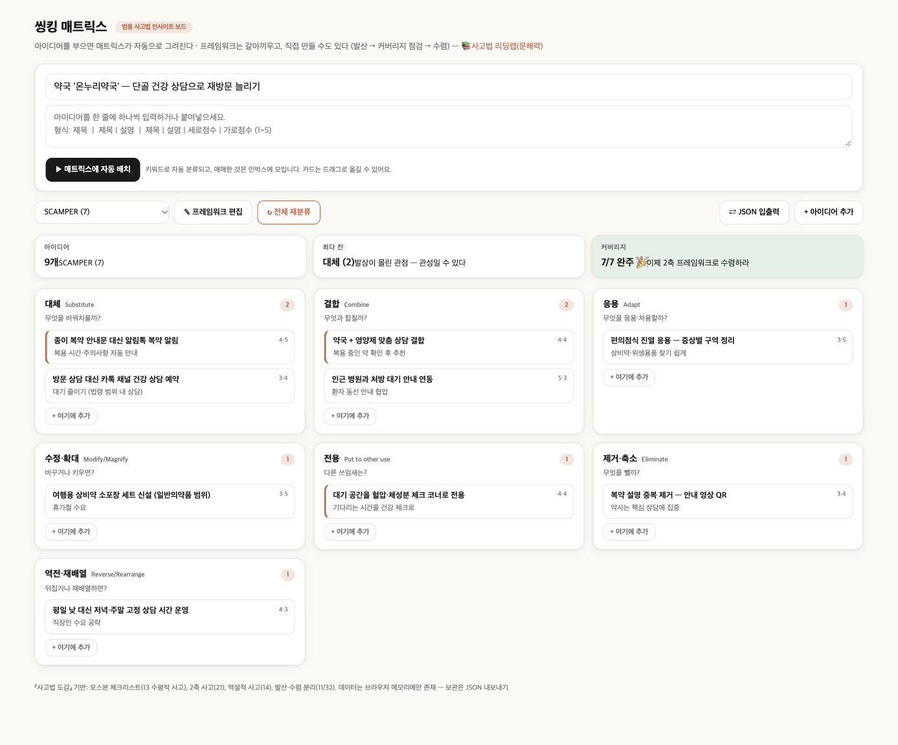

가상 사례 · 💆 뷰티·건강
💊 ‘온누리약국’ 약국
목표: 단골 건강 상담으로 재방문 늘리기 — SCAMPER 7가지 질문으로 아이디어 9개를 정리했습니다.
핵심 3가지
P 전용 대기 공간 → 혈압·체성분 체크 코너 → 단골 접점이 늘어난다
S 대체 알림톡 복약 알림 → 복약 순응도와 신뢰 ↑
C 결합 영양제 맞춤 상담 → 복용 약 확인이 곧 차별점
완성 보드

렌즈별 아이디어
효과·실현성은 1~5점의 예시 점수입니다. ⭐는 둘 다 4점 이상 — “우선 실행” 후보.
대체Substitute2
무엇을 바꿔치울까?
-
종이 복약 안내문 대신 알림톡 복약 알림복용 시간·주의사항 자동 안내⭐ 효과 4 · 실현 5
-
방문 상담 대신 카톡 채널 건강 상담 예약대기 줄이기 (법령 범위 내 상담)효과 3 · 실현 4
결합Combine2
무엇과 합칠까?
-
약국 + 영양제 맞춤 상담 결합복용 중인 약 확인 후 추천⭐ 효과 4 · 실현 4
-
인근 병원과 처방 대기 안내 연동환자 동선 안내 협업효과 5 · 실현 3
응용Adapt1
무엇을 응용·차용할까?
-
편의점식 진열 응용 — 증상별 구역 정리상비약·위생용품 찾기 쉽게효과 3 · 실현 5
수정·확대Modify/Magnify1
바꾸거나 키우면?
-
여행용 상비약 소포장 세트 신설 (일반의약품 범위)휴가철 수요효과 3 · 실현 5
전용Put to other use1
다른 쓰임새는?
-
대기 공간을 혈압·체성분 체크 코너로 전용기다리는 시간을 건강 체크로⭐ 효과 4 · 실현 4
제거·축소Eliminate1
무엇을 뺄까?
-
복약 설명 중복 제거 — 안내 영상 QR약사는 핵심 상담에 집중효과 3 · 실현 4
역전·재배열Reverse/Rearrange1
뒤집거나 재배열하면?
-
평일 낮 대신 저녁·주말 고정 상담 시간 운영직장인 수요 공략효과 4 · 실현 3
먼저 시작하기 좋은 것 (3개)
- 대체 종이 복약 안내문 대신 알림톡 복약 알림 — 복용 시간·주의사항 자동 안내
- 결합 약국 + 영양제 맞춤 상담 결합 — 복용 중인 약 확인 후 추천
- 전용 대기 공간을 혈압·체성분 체크 코너로 전용 — 기다리는 시간을 건강 체크로
내 가게로 바꿔서 해보기
- 씽킹 매트릭스를 엽니다.
- ⇄ JSON 입출력 → 아래 JSON을 붙여넣고 불러오기.
- 가게 이름·아이디어를 내 것으로 바꾸고, 빈 칸을 채웁니다.